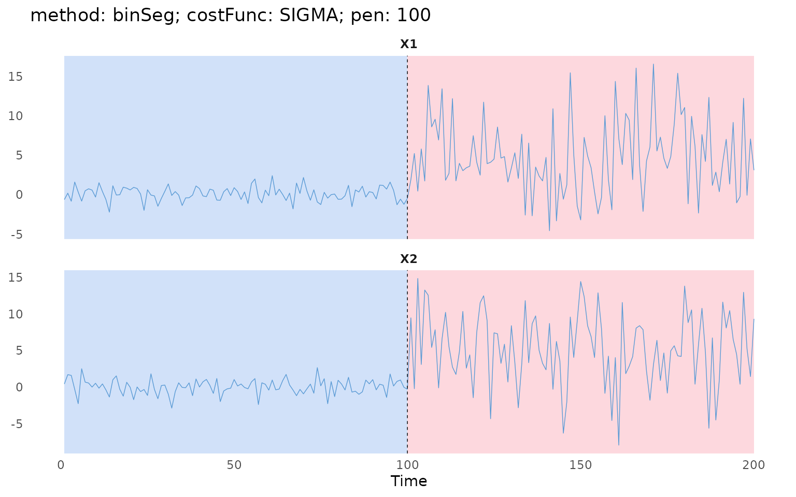
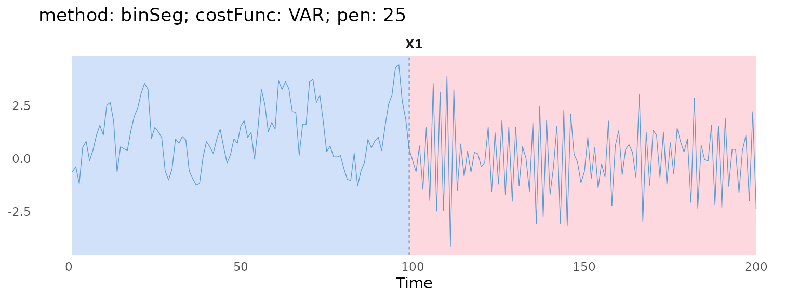

Case studies
case-studies.RmdThis page collects longer worked examples. The two below use
simulated data and binSeg: a change in mean and variance
("SIGMA" cost), and a change in autoregressive dynamics
("VAR" cost). The second example also shows how to change
an existing object through its active bindings.
Simulated data
2-regime SIGMA example via binary segmentation
To demonstrate the package usage, we first consider a simple 2d time series with two piecewise Gaussian regimes and varying variance.
As our example involves regimes with varying variance, a suitable
costFunc option is "SIGMA". Since the
segmentation objects’ interfaces are similar, it is sufficient to
demonstrate the usage of binSeg only.
SIGMAObj = costFunc$new("SIGMA", addSmallDiag = TRUE, epsilon = 1e-6)
binSegObj = binSeg$new(minSize = 1L, jump = 1L, costFunc = SIGMAObj)
binSegObj$fit(tsMat)Once fitted, $predict() and $eval() can be
used. To view the configurations of the binSeg object, we
can use $describe().
binSegObj$describe(printConfig = TRUE)
#> Binary Segmentation (binSeg)
#> minSize : 1L
#> jump : 1L
#> costFunc : "SIGMA"
#> addSmallDiag : TRUE
#> epsilon : 1e-06
#> fitted : TRUE
#> n : 200L
#> p : 2LTo obtain an estimated segmentation, we can use the
$predict() method and specify a non-negative penalty value
pen, which should be properly tuned. This returns a sorted
integer vector of end-points, including the number of observations by
design.
Here, we set pen = 100.
binSegObj$predict(pen = 100)
#> [1] 100 200After running $predict(), the segmentation output is
temporarily saved to the binSeg object, allowing users to
use the $plot() method without specifying
endPts.
binSegObj$plot(d = 1:2,
main = "method: binSeg; costFunc: SIGMA; pen: 100")
2-regime VAR example
You can also modify a binSeg object’s fields through its
active bindings. To demonstrate this, we consider a piecewise vector
autoregressive example with constant noise variance.
set.seed(1)
tsMat = matrix(c(filter(rnorm(100), filter = 0.9, method = "recursive"),
filter(rnorm(100), filter = -0.9, method = "recursive")))Here, the most suitable cost function is "VAR". Instead
of creating a new binSeg object, we will modify the current
binSegObj as follows:
VARObj = costFunc$new("VAR")
binSegObj$tsMat = tsMat
binSegObj$costFunc = VARObj
#> `costFunc` has been updated. Re-fitting the model.
#> Warning in private$.binSegModule$fit(): Some systems seem singular! Switch to
#> the approximate arma::solve()!Modifying tsMat (or any other bindings) will
automatically trigger self$fit() if a tsMat
has already existed.
binSegObj$describe(printConfig = TRUE)
#> Binary Segmentation (binSeg)
#> minSize : 1L
#> jump : 1L
#> costFunc : "VAR"
#> pVAR : 1L
#> fitted : TRUE
#> n : 200L
#> p : 1LWe can then perform binary segmentation with pen = 25
and plot the segmentation results.
binSegObj$predict(pen = 25)
#> [1] 99 200
binSegObj$plot(d = 1L,
main = "method: binSeg; costFunc: VAR; pen: 25")
The warning is expected: with minSize = 1L, some
candidate segments have too few observations to fit the VAR model, so
their cost falls back to an approximate solve.